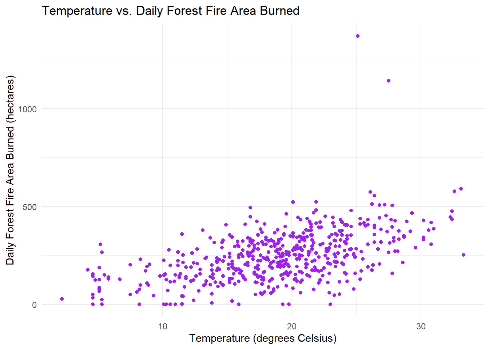
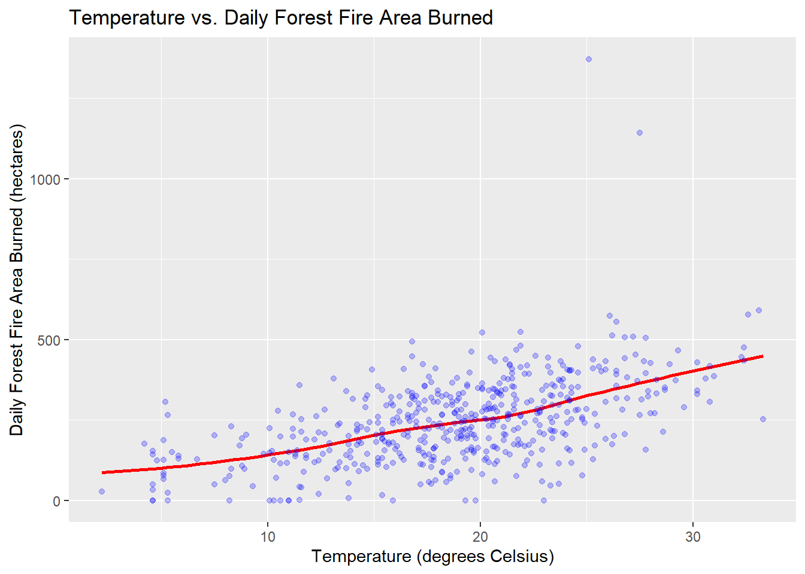

── Attaching core tidyverse packages ──────────────────────── tidyverse 2.0.0 ──
✔ dplyr 1.1.2 ✔ readr 2.1.4
✔ forcats 1.0.0 ✔ stringr 1.5.0
✔ ggplot2 3.4.2 ✔ tibble 3.2.1
✔ lubridate 1.9.2 ✔ tidyr 1.3.0
✔ purrr 1.0.1
── Conflicts ────────────────────────────────────────── tidyverse_conflicts() ──
✖ dplyr::filter() masks stats::filter()
✖ dplyr::lag() masks stats::lag()
ℹ Use the conflicted package (<http://conflicted.r-lib.org/>) to force all conflicts to become errors
here() starts at C:/Users/kiran/Documents/MEDS 2022-2023/kiranfavre.github.ioIntroduction
In this blog, I want to evaluate whether weather has an influence on forest fires. I have wondered about this considering the wildfires in my region in 2020).
Data
The data I will be using is a data set of daily forest fire area burned in the northeast region of Portugal and meteorological conditions on the recorded day (data was constructed from here).
Exploration
Visualizing the data
To begin to understand this relationship, I will make a scatter plot showing area burned as it relates to temperature to determine the general relationship.
Show code
forestfires_data <- readRDS("~/MEDS 2022-2023/kiranfavre.github.io/posts/2023-05-08_fire_linreg/forestfires.rds")
ggplot(forestfires_data,
aes(x = temp,
y = area)) +
geom_point(col = "purple") +
labs(x = "Temperature (degrees Celsius)",
y = "Daily Forest Fire Area Burned (hectares)",
title = "Temperature vs. Daily Forest Fire Area Burned") +
theme_minimal()
Here I see a moderate positive correlation, which intuitively makes sense to me. If temperature is higher, fires that may not have continued to burn may keep burning for longer, covering a larger area. The correlation is not very strong, but I would say there is a positive correlation nonetheless.
Estimating the relationship with simple linear regression
Using the lm() command to estimate the following simple linear regression:
\[ \text{area_burned}_i = \beta_0 + \beta_1 \text{temp}_i + \varepsilon_i \]
Using this relationship, I will look into:
How many hectares are predicted to burn on a day that is 1 degrees Celsius?
How many hectares are predicted to burn on a day that is 28 degrees Celsius?
How many more hectares are predicted to burn on a day in winter at 12 degrees Celsius as compared to a hot summer day at 30 degrees Celsius?
Show code
linreg <- lm(area ~ temp, data = forestfires_data) |>
summary() |> #summarize
xtable() |> #beautify
kable()
print(linreg)
| | Estimate| Std. Error| t value| Pr(>|t|)|
|:-----------|--------:|----------:|----------:|------------------:|
|(Intercept) | 14.77689| 17.1649949| 0.8608733| 0.3897084|
|temp | 12.25678| 0.8686797| 14.1096681| 0.0000000|Show code
#one degree celsius day
area_1C <- 14.77689 + 12.2578
area_1C[1] 27.03469Show code
#28 degrees Celsius
area_28C <- 14.77689 + (12.2578 * 28)
area_28C[1] 357.9953Show code
#how many more hectares will be burned at 30 degrees vs 12
area_diff <- (14.77689 + (12.2578 * 30)) - (14.77689 + (12.2578 * 12))
area_diff[1] 220.6404This model predicts that at zero degrees temperature, there would be 14.78 hectares of burned area, and that for a one degree increase in temperature, the burn area will increase by 12.26 hectares. On a day that is one degree Celsius, this model predicts that there will be 27.03 hectares of burned area. On a 28 degrees Celsius day, the model predicts that 358 hectares of forest would be burned. This model predicts that there will be 220.6 more hectares burned on a 30 degree day than a 12 degree day.
Model fit
Show code
ggplot(data = forestfires_data,
aes(temp, area)) +
geom_smooth(se = FALSE,
col = "red") +
geom_point(col = "blue",
alpha = 0.25) +
labs(x = "Temperature (degrees Celsius)",
y = "Daily Forest Fire Area Burned (hectares)",
title = "Temperature vs. Daily Forest Fire Area Burned")`geom_smooth()` using method = 'loess' and formula = 'y ~ x'
I think the model is moderately accurate at fitting the data - it does accurately predict the moderate positive correlation that I saw from the scatter plot. The points are not super tight/close to the line but are also not very far (moderate residuals), and there are not many outliers except for at very high temperatures.
Coefficient of Determination
The coefficient of determination is the percentage of variance in y that is explained by x (and any other independent variables). Therefore, computing the coefficient of determination (\(R^2\)) will allow me to predict what percent of variation in area burned are explained by temperature.
Show code
#need to do the regression without the table making
regression <- lm(area ~ temp, data = forestfires_data)
R2 = summary(regression)$r.squared
print(R2)[1] 0.2787951Approximately 28% of variation in daily forest fire area burned in hectares can be attributed to a change in temperature. This does align with my intuition that the model is a moderate fit for this relationship. This coefficient of determination accounts for the positive correlation that I noticed and seems to account for some of the higher residuals in the middle to high values of temperature.
Omitted Variable Bias
Due to complex climatological phenomena, days with high temperatures tend to coincide with days that are also different in other dimensions. For example, hot days tend to be less rainy, with lower wind, and of higher or lower humidity, depending on the geographic location. This raises the concern of omitted variables bias, as these variables may also be correlated with area burned.
To address this, I will add relative humidity (RH) as an independent variable to my linear regression model, in addition to temperature.
Show code
RH_linreg <- lm(area ~ temp + RH, data =forestfires_data) |>
summary() |>
xtable() |>
kable()
print(RH_linreg)
| | Estimate| Std. Error| t value| Pr(>|t|)|
|:-----------|-----------:|----------:|---------:|------------------:|
|(Intercept) | -15.5334175| 31.3949740| -0.494774| 0.6209711|
|temp | 12.8782466| 1.0221028| 12.599756| 0.0000000|
|RH | 0.4193295| 0.3637187| 1.152895| 0.2494893|Adding relative humidity to thie model changed the intercept drastically, but the coefficient on temperature did not change much. For every one degree Celsius increase, keeping relative humidity constant, the burn are will increase by 12.88 hectares. In this model without relative humidity, the slope coefficient was 12.26, so an increase of 0.62 acres is not enough to convince me that there is an omitted variable bias. Adding in relative humidity does not increase burned area greatly, which it would if this was a case of omitted variable bias.
Citation
BibTeX citation:
@online{favre2023,
author = {Favre, Kiran},
title = {Understanding the {Relationship} {Between} {Temperature} \&
{Forest} {Area} {Burned}},
date = {2023-05-08},
url = {https://kiranfavre.github.io/posts/2023-05-08_fire_linreg/},
langid = {en}
}
For attribution, please cite this work as:
Favre, Kiran. 2023. “Understanding the Relationship Between
Temperature & Forest Area Burned.” May 8, 2023. https://kiranfavre.github.io/posts/2023-05-08_fire_linreg/.